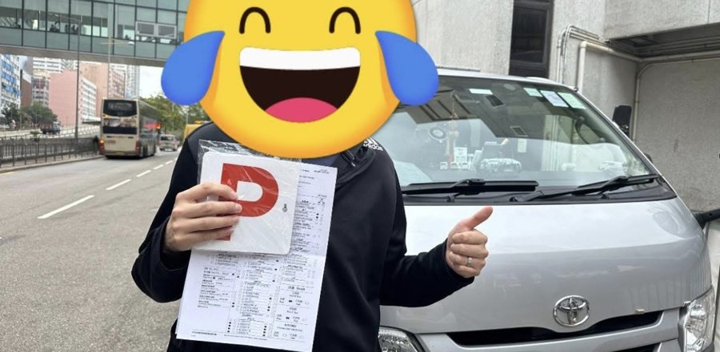
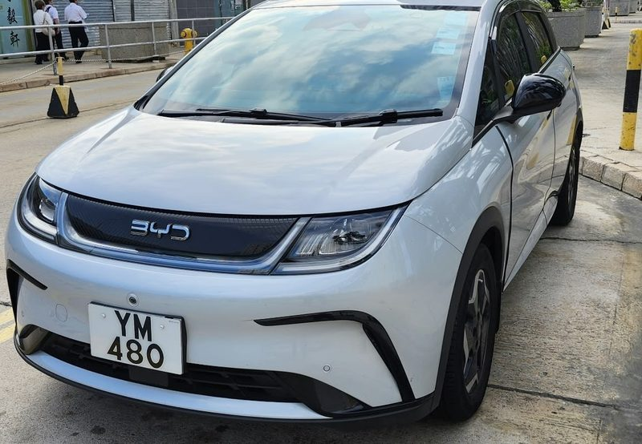

教學理念
每個學生，
都係唔識先嚟學。
識嘅，就唔使搵我教啦。所以你犯錯嗰下，我會先搵出原因：
搵到原因，就針對你嘅弱項去教。做過香港駕駛學院模擬考試導師，我最擅長搵出學生嘅駕駛錯誤，再教你點樣改正。
換個講法
聽唔明，我就用第二啲字句再講。
擺道具
仲係唔明？電話當架車、支筆當石壆、本簿畫個泊車格，慢慢郁俾你睇。
師傅嘅白板：點解車尾會偏右？
隻手太快、架車太慢，車尾就會偏右。
真實上堂片段 · 1 分 17 秒
喺車廂入面，
都可以畫俾你睇
泊車點解會偏？師傅用電話當架車、紙巾盒當障礙物，喺你面前慢慢郁俾你睇。
學生點講
學生嘅原話
Student quotes are translated from Cantonese.
「我前後應該試咗 5–6 個學車師傅，最後遇到嚴師傅就無再試其他師傅了。」
「300% 嘅 presentation skills，講嘢一啲都唔抽象……好有耐性。」
向左掃睇更多

「佢好有耐性慢慢執我嘅短處，仲特登做訓練教我點樣放鬆同埋增強自信心……嚴師傅會就返我嘅性格，而用唔同嘅方式教學。」
「一個平凡日子同師傅九龍揸咗老公車去石澳，條路又彎又斜，而且仲同部車差唔多咁窄……學車 4 年，走到今日都有啲不可思議。原來解決恐懼嘅方法，係行動。」
「搵咗 5 個月時間上咗 N 個師傅，終於搵啱想搵嘅導師，唔使再轉……你係教得我最好基礎，令到我轉咩車都易上手。」
「陽光 sir 好好啊，我跟緊佢 P 牌補鐘補咗幾堂喇。」
唔超收。「覺得自己唔夠時間俾學生練車，就唔收。」
夠膽俾你出大路。「九龍塘揸去何文田、石蔭揸去荃灣……練車咁耐以來都真係無意外。」
落堂都會跟進。「遇到困難 WhatsApp 都會俾改善資訊我。」
學生同師傅揸過嘅路
「總之無學禁嘅路。」—— 學生留言
- 屯門
- 深井
- 荃灣
- 石蔭
- 美孚
- 深水埗
- 石硤尾
- 九龍塘
- 太子
- 旺角
- 何文田
- 尖沙咀
- 石澳
教咩車 · 收費
新手、重考、有牌補鐘都得

自動波私家車
比亞迪電動車，易上手
自動波輕型貨車
考到之後，自動波私家車同 Van 都揸得
棍波輕型貨車
考到之後，私家車同 Van、棍波同自動波都揸得
租車考試
考試當日用師傅架車
有牌補鐘
P 牌、雪藏牌重新上路
學院補鐘
喺沙田、元朗學院學緊車，想加堂練習都得
收費
每堂收費、上堂時間同考試租車費，視乎車種同堂數。WhatsApp 問師傅最準。
關於嚴師傅
兩個小朋友嘅爸爸，
教車最緊要有耐性。
- 教車經驗
- 11 年
- 曾任
- 大型連鎖駕駛學校導師
- 模擬考經驗
- 曾任香港駕駛學院模擬考試導師，擅於找出學生駕駛錯誤，並給予改正方法
- 考生合格
- 過千
- 特別經驗
- 訓練巴士車長駕駛巴士
- 教授車種
- 自動波私家車（比亞迪電動車 YM480）、自動波輕型貨車、棍波輕型貨車
- 服務
- 學車、重考、有牌補鐘、沙田元朗學院補鐘、租車考試
- 地區
- 九龍、新界
- 授課語言
- 廣東話、普通話、英文
- 登記
- 運輸署私人駕駛教師名單
常見問題
學車前，大家通常問
我完全未揸過車，可以搵你學嗎？
可以。每個學生都係唔識先嚟學。通常頭一兩堂會先去車少嘅地方練基本功，熟手啲先慢慢出大路。
應該考邊種牌？
自動波私家車上手最快；自動波輕型貨車考到之後，自動波私家車同 Van 都揸得；棍波輕型貨車考到之後，私家車同 Van、棍波同自動波都揸得。未決定嘅話，WhatsApp 同師傅傾下你嘅用車需要。
有牌但好耐冇揸，可以補鐘嗎？
可以，P 牌、雪藏牌都得。有學生就揸自己屋企架車，同師傅由九龍揸去石澳。
我喺學院學緊車，可以出嚟補鐘嗎？
可以。喺沙田、元朗學院學緊車、想加堂練習嘅學員，都可以 WhatsApp 師傅約時間。
收費幾多？
視乎車種同堂數。WhatsApp 6448 0997 問師傅最準。
喺邊度上堂？
九龍、新界都得，包括沙田、元朗。上堂地點同時間，WhatsApp 同師傅約。
可唔可以用普通話或者英文教？
可以，師傅可以用廣東話、普通話或者英文教。
嚴師傅 Sunny Yim · 私人駕駛教師 · 九龍 / 新界